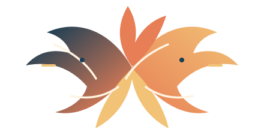

DŨNG
Ôn thi CNTT cơ bản
10 đề trắc nghiệm, bài lý thuyết PDF và 6 module ôn tập
Đang kết nối…
Mã: …
Nhập mã thiết bị khác
Các câu hỏi và lựa chọn được trích từ PDF bạn cung cấp. Tiến độ tự lưu và đồng bộ bằng mã 6 số.